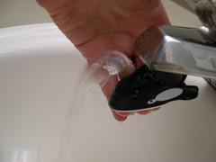

Bathroom Sink Drinking Fountain (a.k.a. Shamu)
In my bathroom at home I have a sink just like everybody else. What I have that most people DON'T have is a water fountain attachment. Despite my best efforts to find a link or a picture of something like it on the internet, I can't. Even though it was never one of those things that I felt like I needed before, I have to have it now. We call him Shamu, since he is like a little killer whale.
I brush my teeth at that same sink. Every time I go to wash out my mouth, I don't have to cup my hand and fill it with water. I don't have to use some lame cup. I can just hold the bottom of it, and POW, I've got a water fountain. Want to take a quick drink, yet you don't want to have to get out a glass and fill it up? Need to wash down that vitamin? Pow! No more craning your neck to drink straight from the faucet.

Although I'm able to find a picture of a lame as-seen-on-TV water fountain thingie, I'll provide pictures of my own very shortly. Those dumb things are $20 for 2. Yeah, that's a lame price. I bought mine at the grocery store for like $3.
I love this little thing, and would encourage you to try to find something similar. I can put him in the dishwasher to wash him (though I don't generally like for him to be off of the faucet for that long). I can take him with me if I really want to. To sum this up... it's cool.
- Prior: Wendy's Spoons
- Next: Hairy Backs